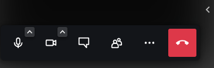
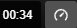

Audio i video pozivi
Audio i video pozivi dostupni su direktno iz ONLYOFFICE Document Editor-a korišćenjem dodatka Jitsi. Jitsi obezbeđuje bezbedne i lako primenljive mogućnosti video konferencija.
Napomena: dodatak Jitsi nije podrazumevano instaliran i mora se dodati ručno. Molimo vas da pogledate odgovarajući članak kako biste pronašli uputstvo za ručnu instalaciju: Dodavanje dodataka u ONLYOFFICE Cloud ili Dodavanje novih dodataka u server editore, ili instalirajte dodatak pomoću Plugin Manager-a.
- Prebacite se na karticu Plugins i kliknite na ikonu Jitsi na gornjoj traci sa alatkama.
-
Pre početka poziva popunite polja na dnu leve bočne trake:
Domen – unesite naziv domena ako želite da povežete sopstveni domen.
Naziv sobe – unesite naziv sobe za sastanak. Ovo polje je obavezno i ne možete započeti poziv ako ga ne popunite.
- Kliknite na dugme Start da biste otvorili Jitsi Meet iframe.
- Unesite svoje ime i dozvolite pregledaču pristup kameri i mikrofonu.
- Ako želite da zatvorite Jitsi Meet iframe, kliknite na dugme Stop na dnu leve bočne trake.
- Kliknite na dugme Join the meeting da biste započeli poziv sa zvukom ili kliknite na strelicu da biste se pridružili bez zvuka.
Elementi interfejsa Jitsi Meet iframe-a pre pokretanja sastanka:
Audio podešavanja i uključenje/isključenje mikrofona
- Kliknite na strelicu da biste pristupili pregledu audio podešavanja.
- Kliknite na ikonu mikrofona da biste uključili ili isključili mikrofon.
Video podešavanja i pokretanje/zaustavljanje videa
- Kliknite na strelicu da biste pristupili pregledu videa.
- Kliknite na ikonu kamere da biste pokrenuli ili zaustavili video.
Pozivanje učesnika
- Kliknite na ovo dugme da biste pozvali još učesnika na sastanak.
-
Podelite sastanak kopiranjem linka za sastanak ili
podelite pozivnicu kopiranjem teksta pozivnice, ili putem podrazumevane e-pošte, Google mail-a, Outlook mail-a ili Yahoo mail-a. - Ugradite sastanak kopiranjem linka.
- Koristite neki od dostupnih telefonskih brojeva za pridruživanje sastanku.
Izbor pozadine
- Izaberite ili dodajte virtuelnu pozadinu za sastanak.
- Podelite svoj ekran izborom odgovarajuće opcije: Ekran, Prozor ili Kartica.
Podešavanja
Podesite napredna podešavanja koja su organizovana u sledeće kategorije:
- Uređaji – za podešavanje mikrofona, kamere i audio izlaza, kao i reprodukciju testnog zvuka.
- Profil – za podešavanje imena koje se prikazuje, e-mail adrese za Gravatar, kao i prikaz/sakrivanje sopstvenog video prikaza.
- Kalendar – za integraciju sa Google ili Microsoft kalendarom.
- Zvuci – za izbor radnji za koje će se reprodukovati zvuk.
- Više – za podešavanje dodatnih opcija: uključivanje/isključivanje ekrana pre sastanka i prečica na tastaturi, izbor jezika i brzine kadrova pri deljenju ekrana.
Elementi interfejsa koji se pojavljuju tokom video konferencije:

Kliknite na bočnu strelicu sa desne strane da biste prikazali umanjene prikaze učesnika na vrhu.

Tajmer na vrhu iframe-a prikazuje trajanje sastanka.Otvori ćaskanje
- Unesite tekstualnu poruku ili kreirajte anketu.
Učesnici
- Prikažite listu učesnika sastanka, pozovite nove učesnike i pretražite učesnike.
Više radnji
- Pronađite niz opcija koje vam omogućavaju da u potpunosti iskoristite sve dostupne Jitsi funkcije. Skrolujte kroz opcije da biste ih sve videli.
Dostupne opcije,
- Pokreni deljenje ekrana
- Pozovi učesnike
- Uključi/isključi pločasti prikaz
- Podešavanja performansi za prilagođavanje kvaliteta
- Prikaži preko celog ekrana
-
Bezbednosne opcije
- Režim čekaonice – učesnici se mogu pridružiti sastanku tek nakon odobrenja moderatora;
- Režim sa lozinkom – učesnici se pridružuju sastanku uz lozinku;
- End-to-end enkripcija – eksperimentalni način obezbeđivanja poziva (obratite pažnju na ograničenja, kao što su onemogućavanje serverskih servisa i korišćenje pregledača koji podržavaju insertable streams).
- Pokreni prenos uživo
- Isključi zvuk svima
- Onemogući kamere svim učesnicima
- Podeli video
- Izaberi pozadinu
- Statistika govornika
- Podešavanja
- Prikaži prečice
- Ugradi sastanak
- Ostavi povratnu informaciju
- Pomoć
Napusti sastanak
- Kliknite na ovu opciju kada želite da završite poziv.